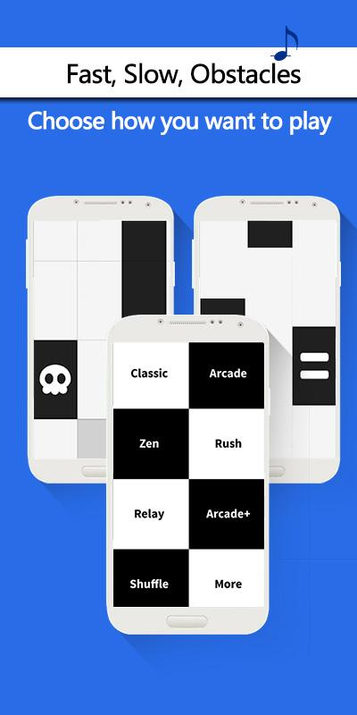
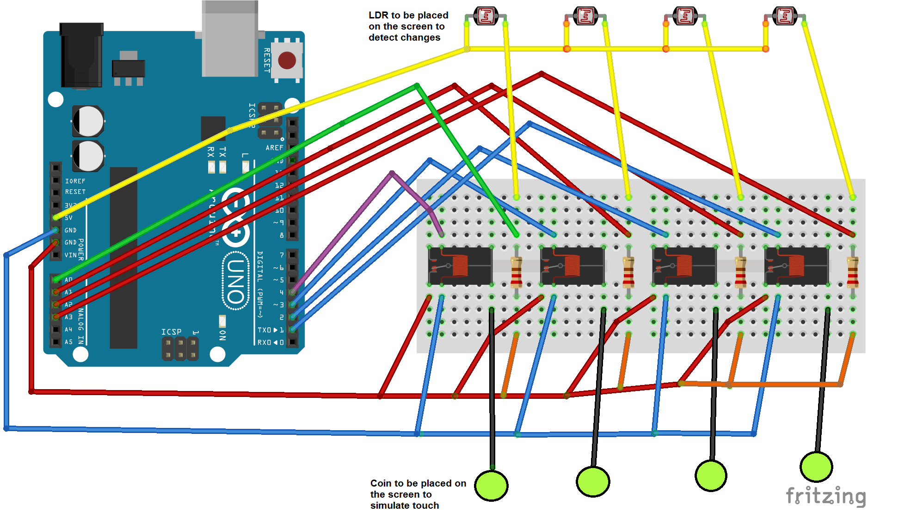

Piano Tiles
Game Description
The game has tiles falling from the top of the screen. The player is expected to tap of the tiles (which are black in color) as quickly as possible without missing any.
Playstore Link: Piano Tiles

Difficulty Level: Moderate
You can see a demo video of the working of this game at the following link: https://youtu.be/TQtS-OKW5Yo
Overview
The color of the tile is sensed as black or white using LDR, and touch is simulated at appropriate locations on the screen using a logic programmed into the Arduino.
Requirements
- An Android Device with the 'Piano Tiles' game
- Arduino, Breadboard, 22k Resistor, LDR, Relay, Connecting wires, a conducting metal coin
- Computer to program Arduino
Circuit Diagram

Block Diagram

Tutorial
Here's the step-wise tutorial to automate the game.
Step 1: Sensor placement
The LDRs are placed like a grid at the locations where the tiles will be falling through. When a black tile appears at the LDRs, the output voltage changes appropriately that can be observed on the Arduino.
Step 2: Touch simulation
The coins are placed on the screen and the output from the relay is connected to it. When the relay output is grounded, it simulates a touch on the screen and when it is open circuited, it withdraws the touch. Appropriate coins are activated depending on the input from the LDRs.
Step 3: Arduino code
Arduino reads the voltage drop across the LDR. Observe the voltage voltages for black and white tiles, choose a suitable threshold voltage say Vt.
If voltage is less than the threshold voltage, then there is larger the drop across LDR, larger the resistance, which implies a Black tile and vice versa.
We have simulate touch accordingly. The values of the delays can be tweaked to get the best result.
int delay1 = 80;
int delay2 = 75;
if(analogRead(A5)<700)
{
digitalWrite(4, HIGH);
delay(delay2);
digitalWrite(4, LOW);
delay(delay1);
}
else if(analogRead(A4)<700)
{
digitalWrite(5, HIGH);
delay(delay2);
digitalWrite(5, LOW);
delay(delay1);
}
else if(analogRead(A3)<700)
{
digitalWrite(6, HIGH);
delay(delay2);
digitalWrite(6, LOW);
delay(delay1);
}
else if(analogRead(A2)<700)
{
digitalWrite(7, HIGH);
delay(delay2);
digitalWrite(7, LOW);
delay(delay1);
}
Conclusions
This way, you can build a circuit that can play the game Piano Tiles. This is a very interesting concept that can be applied over a wide range of other games.